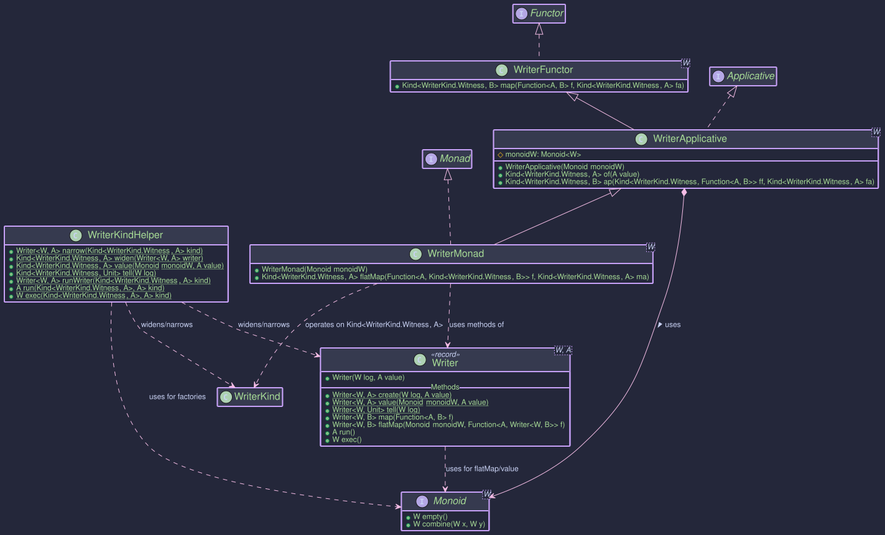

Writer - Accumulating Output Alongside Computations
Purpose
The Writer monad is a functional pattern designed for computations that, in addition to producing a primary result value, also need to accumulate some secondary output or log along the way. Think of scenarios like:
- Detailed logging of steps within a complex calculation.
- Collecting metrics or events during a process.
- Building up a sequence of results or messages.
A Writer<W, A> represents a computation that produces a main result of type A and simultaneously accumulates an output of type W. The key requirement is that the accumulated type W must form a Monoid.
The Role of Monoid<W>
A Monoid<W> is a type class that defines two things for type W:
empty(): Provides an identity element (like""for String concatenation,0for addition, or an empty list).combine(W w1, W w2): Provides an associative binary operation to combine two values of typeW(like+for strings or numbers, or list concatenation).
The Writer monad uses the Monoid<W> to:
- Provide a starting point (the
emptyvalue) for the accumulation. - Combine the accumulated outputs (
W) from different steps using thecombineoperation when sequencing computations withflatMaporap.
Common examples for W include String (using concatenation), Integer (using addition or multiplication), or List (using concatenation).
Structure
The Writer<W, A> record directly implements WriterKind<W, A>, which in turn extends Kind<WriterKind.Witness<W>, A>.

The Writer<W, A> Type
The core type is the Writer<W, A> record:
// From: org.higherkindedj.hkt.writer.Writer
public record Writer<W, A>(@NonNull W log, @Nullable A value) implements WriterKind<W, A> {
// Static factories
public static <W, A> @NonNull Writer<W, A> create(@NonNull W log, @Nullable A value);
public static <W, A> @NonNull Writer<W, A> value(@NonNull Monoid<W> monoidW, @Nullable A value); // Creates (monoidW.empty(), value)
public static <W> @NonNull Writer<W, Void> tell(@NonNull Monoid<W> monoidW, @NonNull W log); // Creates (log, null)
// Instance methods (primarily for direct use, HKT versions via Monad instance)
public <B> @NonNull Writer<W, B> map(@NonNull Function<? super A, ? extends B> f);
public <B> @NonNull Writer<W, B> flatMap(
@NonNull Monoid<W> monoidW, // Monoid needed for combining logs
@NonNull Function<? super A, ? extends Writer<W, ? extends B>> f
);
public @Nullable A run(); // Get the value A, discard log
public @NonNull W exec(); // Get the log W, discard value
}
- It simply holds a pair: the accumulated
log(of typeW) and the computedvalue(of typeA). create(log, value): Basic constructor.value(monoid, value): Creates a Writer with the given value and an empty log according to the providedMonoid.tell(monoid, log): Creates a Writer with the given log but no meaningful value (typicallyVoid/null). Useful for just adding to the log. (Note: The originalWriter.javamight havetell(W log)and infer monoid elsewhere, orWriterMonadhandlestell).map(...): Transforms the computed valueAtoBwhile leaving the logWuntouched.flatMap(...): Sequences computations. It runs the first Writer, uses its valueAto create a second Writer, and combines the logs from both using the providedMonoid.run(): Extracts only the computed valueA, discarding the log.exec(): Extracts only the accumulated logW, discarding the value.
Writer Components
To integrate Writer with Higher-Kinded-J:
WriterKind<W, A>: The HKT interface.Writer<W, A>itself implementsWriterKind<W, A>.WriterKind<W, A>extendsKind<WriterKind.Witness<W>, A>.- It contains a nested
final class Witness<LOG_W> {}which serves as the phantom typeF_WITNESSforWriter<LOG_W, ?>.
- It contains a nested
WriterKindHelper: The utility class with static methods:wrap(Writer<W, A>): Converts aWritertoKind<WriterKind.Witness<W>, A>. SinceWriterdirectly implementsWriterKind, this is effectively a checked cast.unwrap(Kind<WriterKind.Witness<W>, A>): ConvertsKindback toWriter<W,A>. This is also effectively a checked cast after aninstanceof Writercheck.value(Monoid<W> monoid, A value): Factory method for aKindrepresenting aWriterwith an empty log.tell(Monoid<W> monoid, W log): Factory method for aKindrepresenting aWriterthat only logs.runWriter(Kind<WriterKind.Witness<W>, A>): Unwraps toWriter<W,A>and returns the record itself.run(Kind<WriterKind.Witness<W>, A>): Executes (unwraps) and returns only the valueA.exec(Kind<WriterKind.Witness<W>, A>): Executes (unwraps) and returns only the logW.
Type Class Instances (WriterFunctor, WriterApplicative, WriterMonad)
These classes provide the standard functional operations for Kind<WriterKind.Witness<W>, A>, allowing you to treat Writer computations generically. Crucially, WriterApplicative<W> and WriterMonad<W> require a Monoid<W> instance during construction.
WriterFunctor<W>: ImplementsFunctor<WriterKind.Witness<W>>. Providesmap(operates only on the valueA).WriterApplicative<W>: ExtendsWriterFunctor<W>, implementsApplicative<WriterKind.Witness<W>>. Requires aMonoid<W>. Providesof(lifting a value with an empty log) andap(applying a wrapped function to a wrapped value, combining logs).WriterMonad<W>: ExtendsWriterApplicative<W>, implementsMonad<WriterKind.Witness<W>>. Requires aMonoid<W>. ProvidesflatMapfor sequencing computations, automatically combining logs using theMonoid.
You typically instantiate WriterMonad<W> for the specific log type W and its corresponding Monoid.
1. Choose Your Log Type W and Monoid<W>
Decide what you want to accumulate (e.g., String for logs, List<String> for messages, Integer for counts) and get its Monoid.
import org.higherkindedj.hkt.typeclass.Monoid;
class StringMonoid implements Monoid<String> {
@Override public String empty() { return ""; }
@Override public String combine(String x, String y) { return x + y; }
}
Monoid<String> stringMonoid = new StringMonoid();
2. Get the WriterMonad Instance
Instantiate the monad for your chosen log type W, providing its Monoid.
import org.higherkindedj.hkt.writer.WriterMonad;
// Monad instance for computations logging Strings
// F_WITNESS here is WriterKind.Witness<String>
WriterMonad<String> writerMonad = new WriterMonad<>(stringMonoid);
3. Create Writer Computations
Use WriterKindHelper factory methods, providing the Monoid where needed. The result is Kind<WriterKind.Witness<W>, A>.
import static org.higherkindedj.hkt.writer.WriterKindHelper.*;
import org.higherkindedj.hkt.Kind;
import org.higherkindedj.hkt.writer.WriterKind; // For WriterKind.Witness
import org.higherkindedj.hkt.writer.Writer; // For direct Writer creation if needed
import java.util.function.Function; // Standard Java Function
// Writer with an initial value and empty log
Kind<WriterKind.Witness<String>, Integer> initialValue = value(stringMonoid, 5); // Log: "", Value: 5
// Writer that just logs a message (value is Void/null)
Kind<WriterKind.Witness<String>, Void> logStart = tell(stringMonoid, "Starting calculation; "); // Log: "Starting calculation; ", Value: null
// A function that performs a calculation and logs its step
Function<Integer, Kind<WriterKind.Witness<String>, Integer>> addAndLog =
x -> {
int result = x + 10;
String logMsg = "Added 10 to " + x + " -> " + result + "; ";
// Create a Writer directly then wrap with helper or use helper factory
return wrap(Writer.create(logMsg, result));
};
Function<Integer, Kind<WriterKind.Witness<String>, String>> multiplyAndLogToString =
x -> {
int result = x * 2;
String logMsg = "Multiplied " + x + " by 2 -> " + result + "; ";
return wrap(Writer.create(logMsg, "Final:" + result));
};
4. Compose Computations using map and flatMap
Use the methods on the writerMonad instance. flatMap automatically combines logs using the Monoid.
// Chain the operations:
// Start with a pure value 0 in the Writer context (empty log)
Kind<WriterKind.Witness<String>, Integer> computationStart = writerMonad.of(0);
// 1. Log the start
Kind<WriterKind.Witness<String>, Integer> afterLogStart = writerMonad.flatMap(
ignored -> logStart, // logStart's value is Void, so we map it to keep the '0' or use initialValue directly
computationStart
).flatMap(ignoredVoid -> initialValue, logStart); // Simpler: start with initialValue after logging
Kind<WriterKind.Witness<String>, Integer> step1Value = value(stringMonoid, 5); // ("", 5)
Kind<WriterKind.Witness<String>, Void> step1Log = tell(stringMonoid, "Initial value set to 5; "); // ("Initial value set to 5; ", null)
// Start -> log -> transform value -> log -> transform value ...
Kind<WriterKind.Witness<String>, Integer> calcPart1 = writerMonad.flatMap(
ignored -> addAndLog.apply(5), // Apply addAndLog to 5, after logging "start"
tell(stringMonoid, "Starting with 5; ")
);
// calcPart1: Log: "Starting with 5; Added 10 to 5 -> 15; ", Value: 15
Kind<WriterKind.Witness<String>, String> finalComputation = writerMonad.flatMap(
intermediateValue -> multiplyAndLogToString.apply(intermediateValue),
calcPart1
);
// finalComputation: Log: "Starting with 5; Added 10 to 5 -> 15; Multiplied 15 by 2 -> 30; ", Value: "Final:30"
// Using map: Only transforms the value, log remains unchanged from the input Kind
Kind<WriterKind.Witness<String>, Integer> initialValForMap = value(stringMonoid, 100); // Log: "", Value: 100
Kind<WriterKind.Witness<String>, String> mappedVal = writerMonad.map(
i -> "Value is " + i,
initialValForMap
); // Log: "", Value: "Value is 100"
5. Run the Computation and Extract Results
Use runWriter, run, or exec from WriterKindHelper.
mport org.higherkindedj.hkt.writer.Writer;
// Get the final Writer record (log and value)
Writer<String, String> finalResultWriter = runWriter(finalComputation);
String finalLog = finalResultWriter.log();
String finalValue = finalResultWriter.value();
System.out.println("Final Log: " + finalLog);
// Output: Final Log: Starting with 5; Added 10 to 5 -> 15; Multiplied 15 by 2 -> 30;
System.out.println("Final Value: " + finalValue);
// Output: Final Value: Final:30
// Or get only the value or log
String justValue = run(finalComputation); // Extracts value from finalResultWriter
String justLog = exec(finalComputation); // Extracts log from finalResultWriter
System.out.println("Just Value: " + justValue); // Output: Just Value: Final:30
System.out.println("Just Log: " + justLog); // Output: Just Log: Starting with 5; Added 10 to 5 -> 15; Multiplied 15 by 2 -> 30;
Writer<String, String> mappedResult = runWriter(mappedVal);
System.out.println("Mapped Log: " + mappedResult.log()); // Output: Mapped Log
System.out.println("Mapped Value: " + mappedResult.value()); // Output: Mapped Value: Value is 100
Key Points
The Writer monad (Writer<W, A>, WriterKind.Witness<W>, WriterMonad<W>) in Higher-Kinded-J provides a structured way to perform computations that produce a main value (A) while simultaneously accumulating some output (W, like logs or metrics). It relies on a Monoid<W> instance to combine the accumulated outputs when sequencing steps with flatMap. This pattern helps separate the core computation logic from the logging/accumulation aspect, leading to cleaner, more composable code. The HKT simulation enables these operations to be performed generically using standard type class interfaces, with Writer<W,A> directly implementing WriterKind<W,A>.Summary
The Writer monad (Writer<W, A>, WriterKind, WriterMonad) in Higher-Kinded-J provides a structured way to perform computations that produce a main value (A) while simultaneously accumulating some output (W, like logs or metrics). It relies on a Monoid<W> instance to combine the accumulated outputs when sequencing steps with flatMap. This pattern helps separate the core computation logic from the logging/accumulation aspect, leading to cleaner, more composable code. The HKT simulation allows these operations to be performed generically using standard type class interfaces.